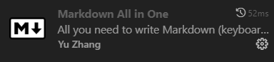
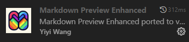
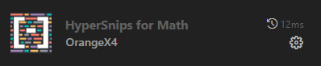

Edit with VS Code
需要的工具
- VS Code
Tip
VS Code 是一个跨操作系统，可扩展性极高的编辑器，如果你还没有下载，可以在https://code.visualstudio.com/进行下载。你也可以参照网上丰富的教程安装一些基本的插件（如简体中文、你喜欢的Theme），在此不再赘述。
安装插件
-
Markdown All in One：
几乎所有Markdown用得上的功能在Markdown All in One里面都有了(自动补全，自动生成Table of contents，Math···)非常建议下载后查看Documentation。如果你曾经没有使用过Markdown的话，可以在这一步停一停，创建一个.md文档体验一下,Syntax可以参考烧风的 Markdown 基础教程。
 -
Markdown Preview Enhanced：
Markdown Preview Enhanced提供了比Markdown All In One更为丰富好用的预览功能，包括调整预览视图下的主题、通过chrome导出pdf、png、html文件等功能。
 - Hypersnips for Math:
VS Code+HyperSnips是VIM+Ulisnip LaTeX的平替，不需要VIM这个门槛，让我还可以呆在的舒适区里。而HyperSnips for Math:是对HyperSnips的补充，增添了对数学环境的支持，即可以设置Snippets（代码块）是否仅在数学环境中展开。

LaTeX的两个痛点：公式多而复杂、常用的公式比如分式缺少shortcut。而HyperSnips for Math可以很完美地解决了这一点，并提供了很高的customize的空间。举几个例子：- 在
$...$环境内输入//就可自动展开为$\frac{}{}$ - 在
$...$环境内输入!=,+-,>=分别自动展开为\neq,\pm,\ge，即 \(\neq \pm \ge \) - 在
$...$环境内输入3diff，将得到$\frac{\mathrm{d}^3y}{\mathrm{d}x^3}$，即\(\frac{\mathrm{d}^3y}{\mathrm{d}x^3}\)，在此基础上我只需要在键盘上依次输入a,tab,b，就可以得到\(\frac{\mathrm{d}^3a}{\mathrm{d}b^3}\)。
Tip
Hypersnips for Math并非像前两个插件一样下载了就可以使用，需要进行一点配置，请根据插件提供的documentation进行操作。 推荐大致浏览一下作者提供的OrangeX4's hsnips，了解一下有什么snippet可以直接使用，可以的话就上手练习一下。 - 在
{kind=link}
{kind=link}
{kind=link}
Customize
每个人对于需要编辑的内容有较大差异，作者提供的snippets很可能不符合我们的需求，甚至有时会产生冲突这时我们只需要按下F1或者Ctrl+shift+P，输入HyperSnips: Open Snippet File然后打开进行对应修改即可。举一些例子：
- 我们可以删除掉不需要的/经常引起冲突的Snippet，例如：我可能需要打\(V_{cc}、r_{bb}\)等双下标的符号，而默认情况是将
rbb展开为r_b，这样我需要多操作才能将其修改为r_{bb}，我只需要Ctrl+F搜索subscript然后找到对应的snippet删除即可（也可以用#注释掉）。 <br>是markdown中常用的排版换行标记，但是在打中文时，还要先切换成英文打<>，非常的不爽，我们只需要在文件末尾添上以下代码即可将《》展开为<br>其中i代表即使在词中也会展开（但是我实际测试有没有i并不影响），A代表自动展开，即不需要tab就能实现替换，推荐使用，否则可能会出现无补全提示的bug。 PS：还有一个符号m，代表仅在数学环境中展开。- 上文提到我有写双下标的需求，于是：
这将使得
snippet `\b(?<!\\)([A-Za-z])_([A-Za-z]{2})` "auto subscript" iAm `` rv = m[1] + "_{" + m[2] + "}"`` endsnippetA_bc在数学环境内自动展开成A_{bc}，省去了打{}的步骤。
其实以上的修改不过是对着源代码照猫画虎，没有什么门槛。只需要在日常使用中，感觉哪里不舒服了，就来试着修改一下Snippet文件，让它更符合自己的需求。